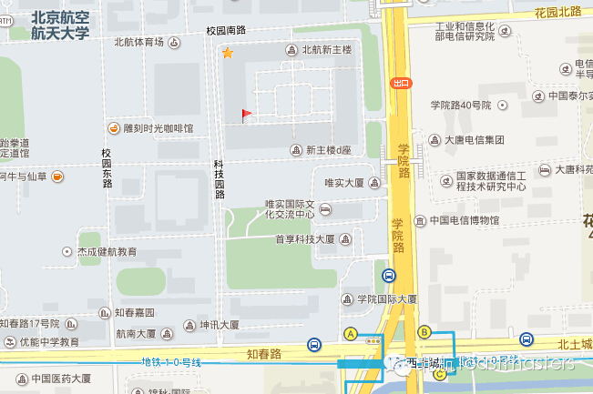

Summer Vacation
Time: Friday August.22 19:30-21:30
Toastmaster: Dale
Table Topic Master: Sophie
Summer vacation is near the end. Did you enjoy it? As a student, we are alwayslooking forward to summer vacation. During the vacation, We go to travel, internships, experience life， or just do nothing but stay at home, and there are always a lot of special moments in the vacation. In the special moments, we feel extremely excited, happy, touched or sad . Have you experienced some special moments in this vacation? This Friday, let's recall your memorable special momentsin summer vacation and go through them again!
Prepared Speech
WHO AM I ?
CC1 Junyar
"Who am I ?", this is a profound question. The question not only can let others know more about you, but also let yourself learn more about who you really are. Junyar is a very smart, confident girl, but have some mystery to us. This is her first speech since she joined our club. so it is certainly a good opportunity to know more about real Junyar. Let's look forward to it!
ENJOY THE LIFE
CC1 Sophie
People enjoyed the seconds, minutes, hours, days, years then life. I believe so does Sophie. As far as I can concerned, Sophie loves life very much. Reading, drawing, and sports occupy her most spare time, and she is not just like them but really good at them. In Sophie's CC1 speech, what is she going to tell us? Maybe something she like, or maybe something in her “dark” side and really earthshaking? I cannot wait!
HASTE MAKES WASTE
CC7 Deron
"Haste makes waste", what a brilliant advice it is! There are a lot of people around us who are seemly hasty but actually wasting time. In Deron's high-end and classy CC7 speech, what story he will tell us? What experience he will share with us? And, what useful advice he will give us? I believed experienced Deron will not let us down!
MAP

ATTENTION! Our meeting venue changed to Room G849, New Main Building, Beihang University (北航新主楼G849). Click here to see large map. And you can phone to Keven for help. TEL: 158-1053-9853
See you in the meeting!
举报
https://mp.weixin.qq.com/s/HvZY_-wA_RKUoNCvmbIKlQ
本页为抢救式本地归档，图文已永久保存。